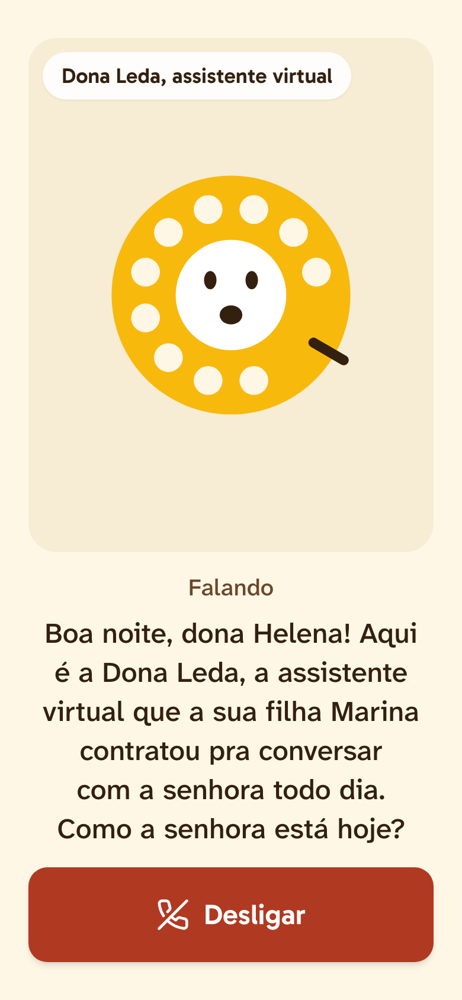
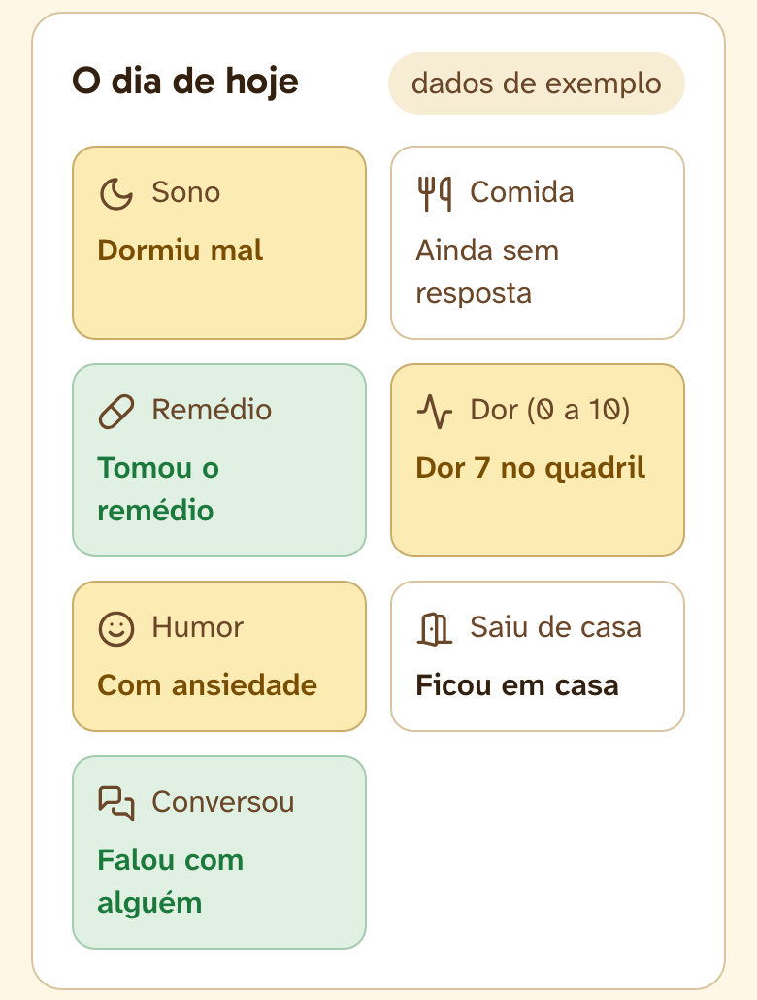
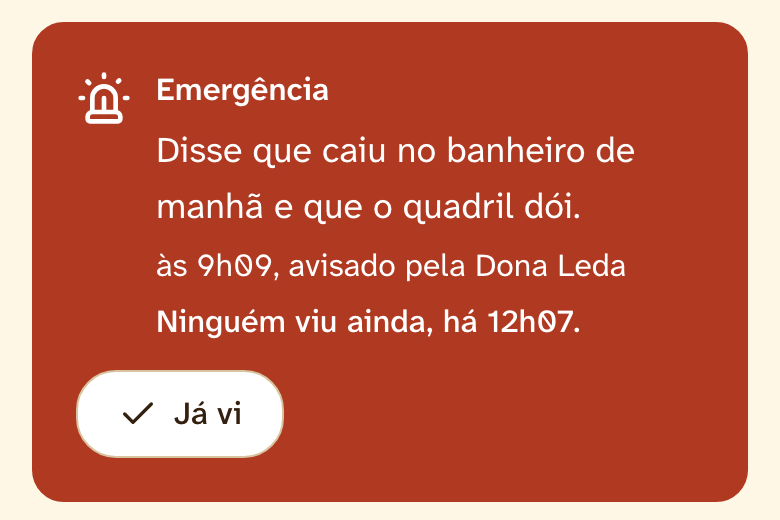

Leda
[idade] anos · [cidade]
Dona Leda
A assistente de cuidado de quem envelhece
Companhia
Segurança
Saúde
Comunicação
Rotina
6 milhões
moram sozinhos
E o Brasil envelhece: brasileiros com 60 anos ou mais
Idosos que moram sozinhos: IBGE, PNAD Contínua 2025. Pessoas com 60 anos ou mais: IBGE, Censos 2010 e 2022; Projeções da População, 2024 (2070 é projeção, 37,8% da população).
R$ 2.800 a 4.500
uns R$ 6 mil
R$ 129,90
Cuidador
Casa de repouso
Dona Leda
Por mês. Cuidador de 12 horas: Cidesp, maio de 2026 (a faixa listrada vai de R$ 2.800 a 4.500). Casa de repouso: média de R$ 5.955 em Belo Horizonte, Mercado Mineiro, agosto de 2026. Dona Leda: plano da família, com até 10 minutos de conversa por dia.
O idoso atende

O celular toca na hora combinada

Ela conversa e lembra do que ele contou
Na Agora
↓
↓
↓
A família recebe

A ficha do dia, tirada da conversa

O aviso na hora, e depois quem viu, em quanto tempo e o que fez
Telas de verdade do app, com pessoas de exemplo (donaleda.vercel.app/telas). O que da Agora está em uso foi conferido no código pela conversa do servidor às 20h58 de 21/11/2026.
Ao vivo
Responde em menos de 3 s
Pode ser interrompida
Avisa a família na hora
A dona Helena é uma idosa de exemplo, e quem faz a voz dela é [nome]. Tempo de resposta medido pelo time em 21/11/2026, com voz gravada: média de 2,8 s e pior caso de 4,4 s. A interrupção funcionou nas duas ligações medidas.
[N] de [N]
avós atenderam no sábado
[N]
atenderam de novo no domingo
[N]
famílias aceitaram o teste
[N] de 2
decidiram certo vendo o aviso primeiro
Avós de 65 anos ou mais, de gente do time, com o sim deles e da família, em 21 e 22/11/2026. O último número é do teste das três versões, com cinco adultos do evento: cada um viu primeiro uma versão, e o aviso apareceu primeiro pra dois deles. Também ouvimos 1 casa de repouso parceira, com três unidades, e [N] casas e cuidadoras.
A gente ouviu
E mudou
Quem precisa ainda mora em casa
A família paga, a casa indicaVisitar toda semana não basta
Ela liga todo diaAviso sem responsável não vira cuidado
O painel mostra quem assumiu[o que as ligações com os avós ensinaram]
[o que mudou]Limites: uma noite e uma manhã, poucos avós, alguém da família do lado.
A primeira casa de repouso parceira, uma mentora com os pais morando sozinhos e o retorno escrito dos mentores, em 21/11/2026.
R$ 129,90por mês, a família paga
R$ 1,1 bi por anopagos pelas famílias700 mil famílias que podem pagar, estimativa do time
Até R$ 13,6 bipagos pelos planos de saúde8,7 milhões de pessoas com 60+ têm plano
Custo no uso médio de 3 min e 20 s por dia, medido numa ligação de teste em 21/11/2026. Imposto do Simples (15,5%) e cartão pelo Asaas. Famílias: idosos que moram sozinhos, usam internet e têm família com renda pra pagar, ver tese.md. Planos: 8,7 milhões de beneficiários com 60 anos ou mais (IESS, fevereiro de 2026); teto = 8,7 milhões × R$ 129,90 × 12 meses, se o plano contratar a Dona Leda pra todos eles.
O segundo cérebro de quem envelhece
Hoje
A ligação de todo dia
A memória do que ele contou
O aviso pra família
2.555 respostaspor idoso por ano, contadas por ele
Em seguida
A filha entra na ligação
O telefone comum
As famílias que a casa indicar
Depoisvisão
Pede o remédio e as compras
R$ 1,8 trigastos por quem tem 50+ em 2024
Marca a consulta
Uma pulseira, o aparelho próprio
[o pedido à banca]
Dona Leda: longevidade com qualidade de vida.
Hoje: no ar em donaleda.vercel.app, código aberto. 2.555 = 7 respostas por ligação (sono, comida, remédio, dor, humor, se saiu de casa, se conversou com alguém, as linhas da semana no painel) × 365 dias, com uma ligação por dia. Em seguida: próximos passos do README e de ideias.md. Depois: visão, com o sim da família quando envolver dinheiro. Consumo de quem tem 50 anos ou mais em 2024: Data8, estudo Brasil Prateado.